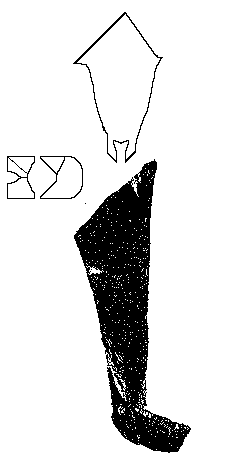

Hose
Herjolfsnes no.88

Pattern drawing based on N�rlund
- Top/Heel Length: 90 cm (35.4")
- Width at the Top: 50 cm (19.7")
- Width at the Bottom: 25 cm (9.8")
- Foot Length: 24 cm (9.45")
- Food Width: 24 cm (9.45")
- Weaving Technique: 2/2
- Thread Count: 7x7 threads/cm (19.05x19.05 threads per inch)
Some Sources:
- N�rlund, Poul. "Buried Norsemen at Herjolfsnes: an archaeological and historical
study." Meddelelser om Gronland: Udgivne af Kommissionen for ledelsen af de
geologiske og geogrfiske undersogelser i Gronland. Bind LXVII. Kobenhavn: C.A.
Reitzel, 1924.
Go to Hose Page; Herjolsnes Site Page
Some Clothing of the Middle Ages -- Hose -- Herjolfsnes 88, by I. Marc Carlson,
Copyright 1997 This code is given for the free exchange of information, provided the
Author's Name is included in all future revisions, and no money change hands-